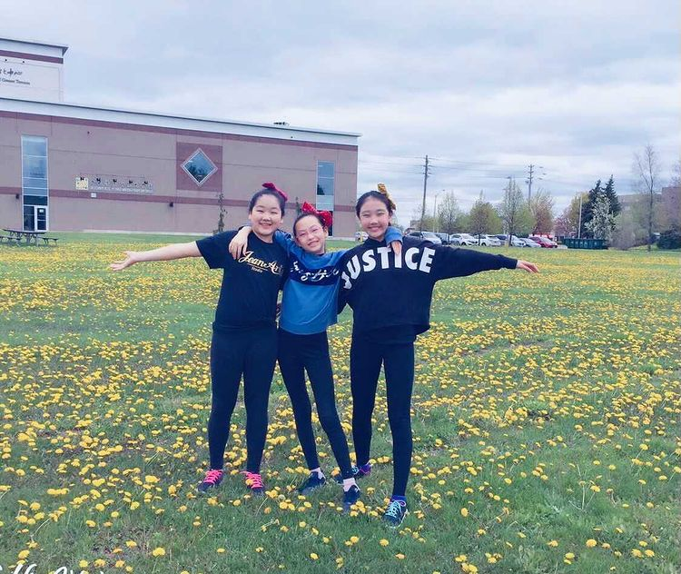
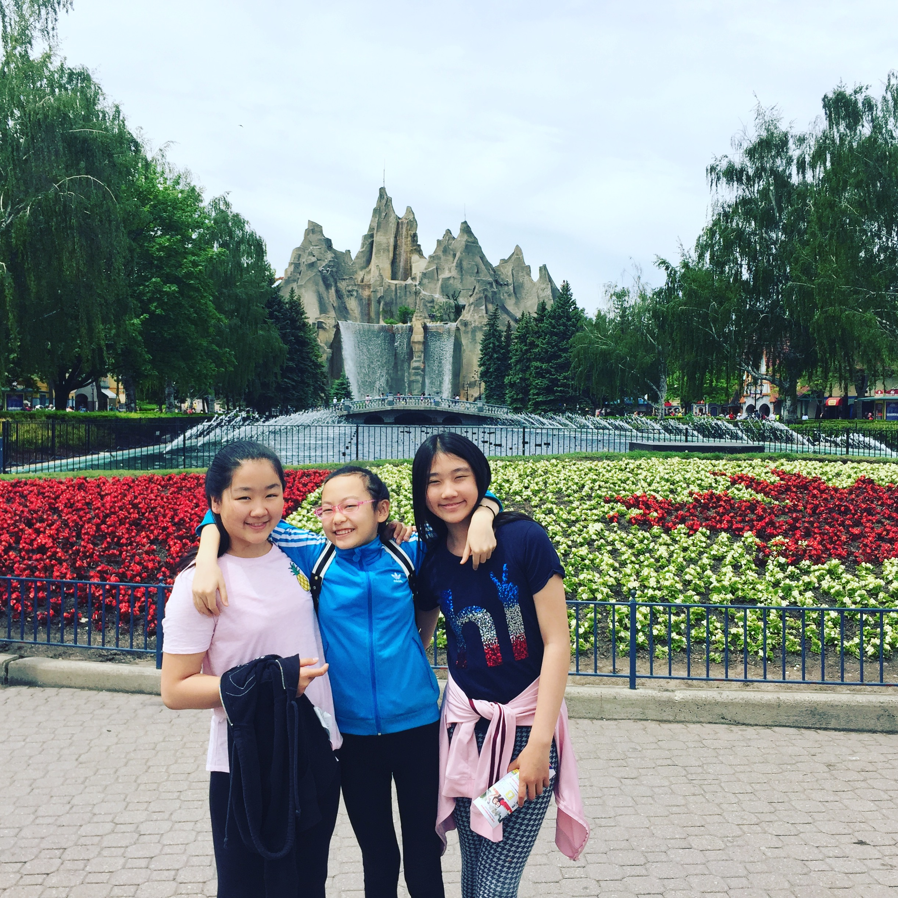
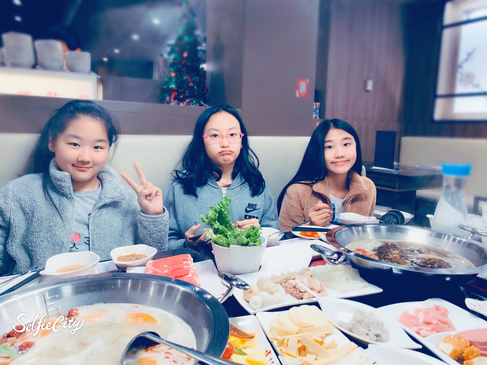
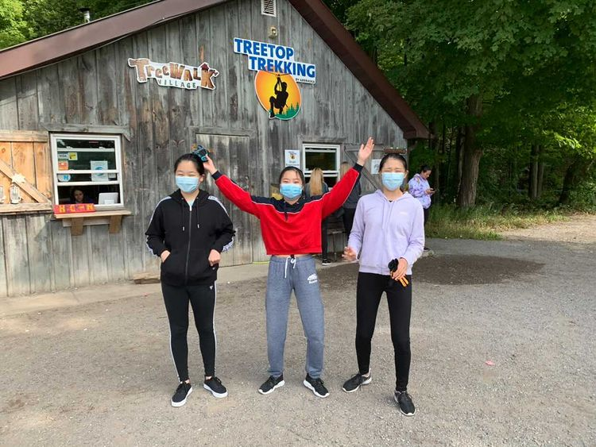
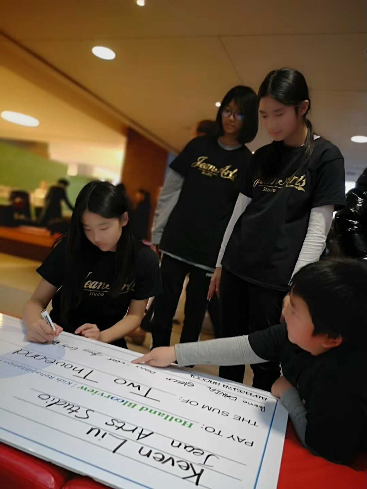
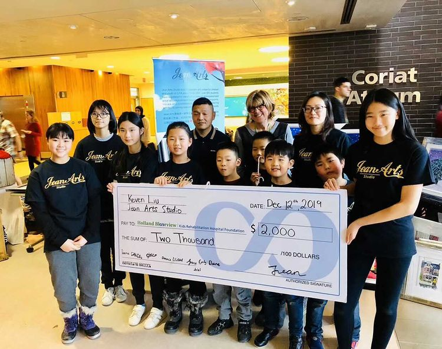
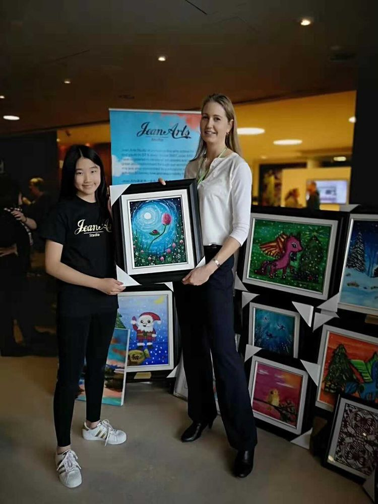

Friends
I have many friends that I have made throughout my life but two of my best friends are tremendously special to me. They have always been kind and supportive to me and both of them have a significance to my life.
Gloria
I met Gloria in pre-school and she was one of the first people that talked to me. She was an extremely friendly and funny person and we started doing eveything together with my sister as well such as going to the same extracurriculars and we even got the chance to go to China and perform on the International Youth Culture and Art Festival.
  
Elsa

I met Elsa in second Grade at Ernest Public school. She moved from China to Canada and we became friends later on in the year. I thought she was outgoing, thoughtful of others and a great person to be friends with.
Helping Donate to Holland Bloorview Hospital
In December of 2019, my art teacher asked me as well as others to be help sell the paintings we made at the Holland Bloorview Hospital. The hospital was holding an event and we decided to donate $2000.00 dollars to the hospital to help the children in need.
  